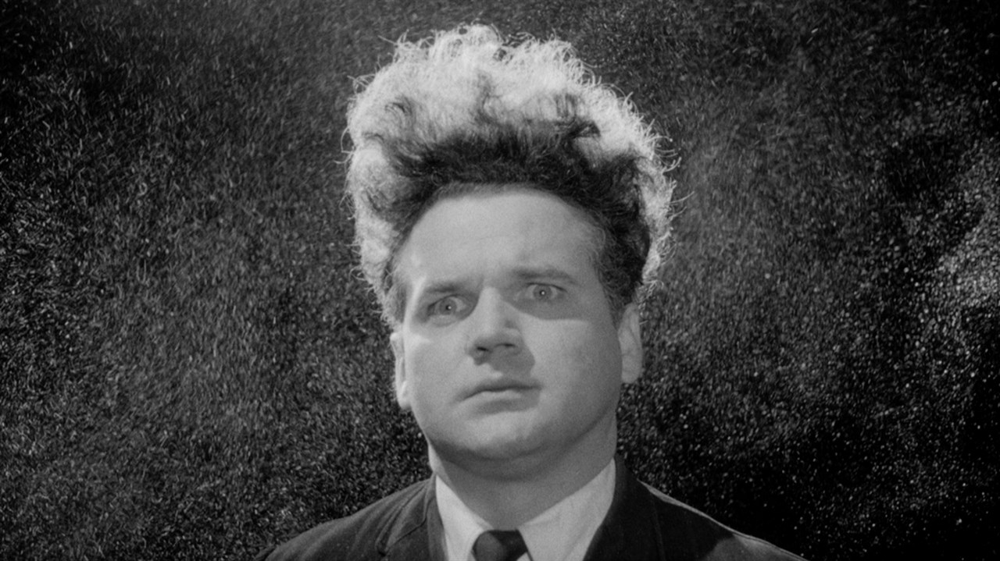
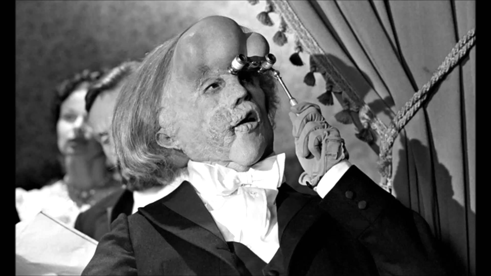
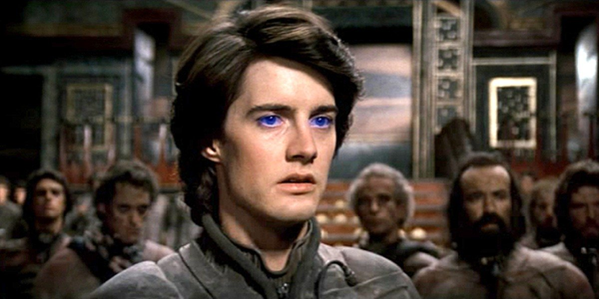
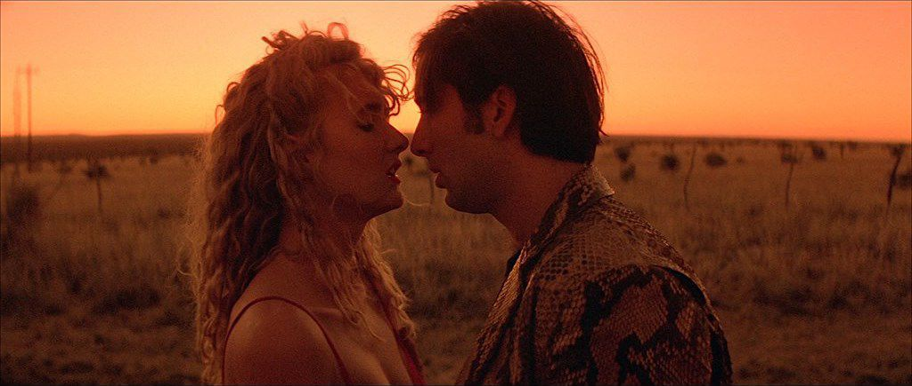
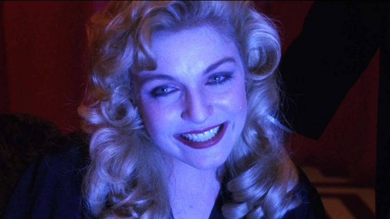
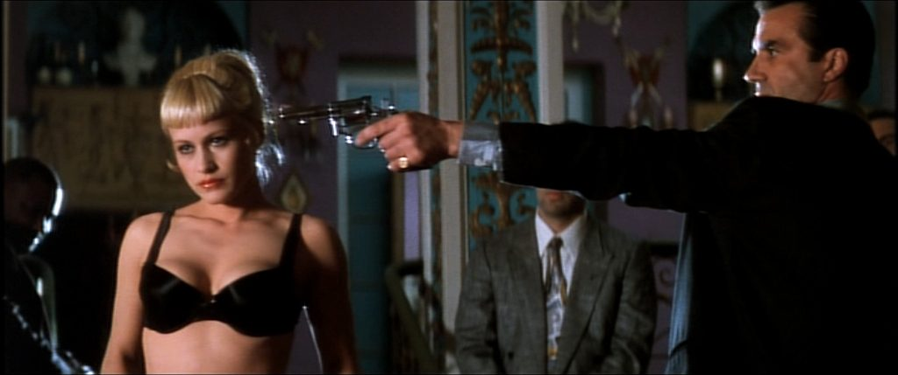
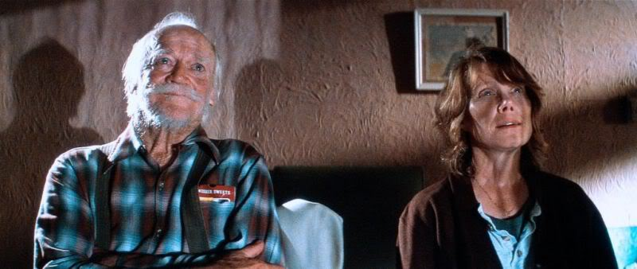

Henry Spencer tries to survive his industrial environment, his angry girlfriend, and the unbearable screams of his newly born mutant child. A film that defies conventional logic and storytelling, fueled by its dark nightmarish atmosphere and compellingly disturbing visuals.

Based on the true story of Joseph "John" Merrick, a nineteenth century Englishman afflicted with a disfiguring congenital disease. With the help of kindly Dr. Frederick Treves, Merrick attempts to regain the dignity he lost after years spent as a side-show freak.

Set in the distant future amidst a feudal interstellar society in which various noble houses control planetary fiefs, Dune tells the story of young Paul Atreides, whose family accepts the stewardship of the planet Arrakis.
>
The discovery of a severed human ear found in a field leads a young man on an investigation related to a beautiful, mysterious nightclub singer and a group of psychopathic criminals who have kidnapped her child.

“Wild at Heart” by John Eldredge is a book aimed to help men rediscover their masculine self with guidance from the Bible. The book also invites women to discover the secret of a man's soul and to delight in the strength and wildness men were created to offer.

The film revolves around the investigation into the murder of Teresa Banks (Pamela Gidley) and the last seven days in the life of Laura Palmer (Sheryl Lee), a popular high school student in the fictional Washington town of Twin Peaks, of which these two connected murders were the central mysteries of the television show "Twin Peaks".

After a bizarre encounter at a party, a jazz saxophonist is framed for the murder of his wife and sent to prison, where he inexplicably morphs into a young mechanic and begins leading a new life. Fred Madison, a saxophonist, is accused under mysterious circumstances of murdering his wife Renee.

An old man makes a long journey by lawnmower to mend his relationship with an ill brother. "The Straight Story" chronicles a trip made by 73-year-old Alvin Straight from Laurens, Iowa, to Mt. Zion, Wis., in 1994 while riding a lawn mower.